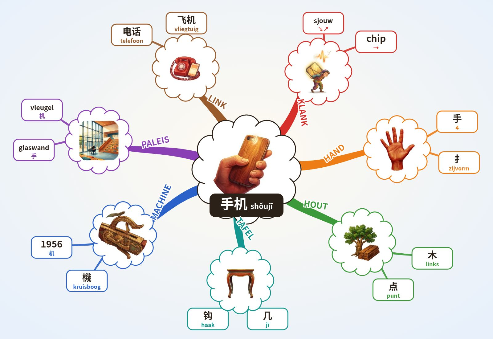

手机shǒujī · 3+1 · mobiele telefoon · mobile phone
Formule
Chinees: Mandarijn, moedertaalstem. NL/EN/ES: klank-haken, geen vertaling.
Klank-haken NL · EN · ES
NL sjouw ↘↗ + chip →: “Mijn hand sjouwt een chip: mijn telefoon.”
EN show? ↘↗ + gee! →: “Show it in your hand. Gee, a phone!”
ES ¿show? ↘↗ + chip →: “Un show en la mano con un chip: el móvil.”
→ 1e toon hoog en vlak · ↗ 2e stijgt · ↘↗ 3e zakt en veert terug · ↘ 4e valt hard · licht = neutraal.
Paleis · Lorentz Lyceum, 10 stops
- Spoorviaduct het hele station hangt boven de Metamorfosenallee
- Stationsgebouw verkeersgebouw van Edwin Megens, 2005
- Beschilderde pijlers muurschildering 2024: groen, geschiedenis, wijk
- Metalen gevel Lorentz gevelsysteem van Rakon (?)
- Cruijff-court kooiveld op het schoolplein
- Glaswand aula grote glazen buitenwand
- Zittrap brede trap die tribune is
- Vleugel vleugel in de aula
- Atrium hart van de school, grafische prints op de wanden
- Zwevende gymzaal sportzaal opgetild naar de 1e verdieping
O'Brien: 6 IK sla een reuzenhand plat tegen de glaswand en sjouw hem omhoog. Het glas dreunt koud. Shǒu ↘↗. 8 De houten vleugel (木) is een machine; het tafeltje (几) erop piept: chiiip, jī →.
Alleen echte, unieke kenmerken (monument-regel). (?) = niet zeker.
Mindmap (Buzan) · tik een tak

● plek ● beeld ● woord ● toon
Buzan: centraal beeld · gebogen takken, dik bij het midden · 1 woord per lijn · beeld per tak · kleur per tak · radiaal, met de klok mee vanaf KLANK.
Deuren · loop
1 · de glaswand „SJOUW!”
Ik sla mijn reuzenhand plat tegen de glaswand; het glas dreunt koud.
手shǒuhand
2 · het hout vernis
Achter het glas ruik ik vers gelakt hout: de vleugel is van boom gemaakt.
木mùhout
3 · het tafeltje „CHIP!”
Op de vleugel staat een tafeltje dat hoog en vlak piept.
几jītafeltje (klankdeel)
4 · de vleugel metaal
Hout + tafeltje klikken in elkaar: de vleugel wordt een machine.
机jīmachine
5 · de drempel „SJOUW! CHIP!”
Ik draag de machine in mijn hand naar buiten: zak-en-veer, dan hoog en vlak.
手机shǒujīmobiele telefoon
Eén adem
手。木。几。机。手机。
Eerst ophalen
手机, 机, 几, 木, 手.
Sjouw... chiiip! Mijn hand sjouwt een chip: mijn telefoon. Sjouw zakt en veert terug, chip blijft hoog en vlak.
Ik sla mijn reuzenhand plat tegen de glaswand; het glas dreunt koud. Achter het glas ruik ik vers gelakt hout: de vleugel is van boom gemaakt. Op de vleugel staat een tafeltje dat hoog en vlak piept. Hout + tafeltje klikken in elkaar: de vleugel wordt een machine. Ik draag de machine in mijn hand naar buiten: zak-en-veer, dan hoog en vlak.
Herhaal-ladder
uur · nog leeg
dag · nog leeg
week · nog leeg
maand · nog leeg
3m + 1j · nog leeg
1 Kern
| Woord | 手机 |
| Klank | shǒujī |
| Toon | 3+1 |
| Vertaling | mobiele telefoon |
| Engels | mobile phone |
| Radicaal | 🔴手🔴 hand · 🔴木🔴 in 机 · ⚫几⚫ klank jī |
| Plek | Lorentz Lyceum, stop 6 glaswand aula · stop 8 vleugel (4.6) · 3.5: Staatsexamen H6/H7 |
| Actie | Een hand grijpt een houten doosje dat piept. |
2 Klank
dal en terug, dan hoog en vlak · tik een lettergreep: hij valt zoals de toon.
Klank (3.5) + haken
shǒujī — tonen 3+1. Klankhook: SJOO-DZJIE (hand pakt, dan piep) 4.6 klank-haken: NL sjouw ↘↗ + chip → · EN show? ↘↗ + gee! → · ES ¿show? ↘↗ + chip →
3 Schrift
手
手 hand (heel teken; links vaak 扌) · 木 hout, betekenisdeel van 机 · 几 jī, klankdeel van 机
手 hand · 机 machine (木 hout + 几) 手 4: 撇 横 横 竖钩 机 6: 横 竖 撇 点 · 撇 横折弯钩
Geschiedenis
Twijfel
4 Geheugenbeeld
Paleis · stop 6 glaswand aula · stop 8 vleugel
IK houd een machine in mijn hand.

Een hand grijpt een houten doosje dat piept.
Scène (Lorentz)
5 Actieve recall
6 Schrijfvolgorde
Tik op Oefen en teken streek 1.
Streken · namen
De hanzi bij elke streek is de officiële streeknaam uit elk Chinees schrijfboek, geen lesstof. Tik of houd de naam vast voor de betekenis.
Opbouw · 手 4 streken · 机 = 木 4 + 几 2
Rood = de nieuwe streek.
Vrij trekken (bord)
Streken (3.5)
Radicaal
- 木mù hout
- 几jī tafeltje (klankdeel)
Familie
Verbindingen (andere woorden)
Herhaal-ladder
uur · nog leeg
dag · nog leeg
week · nog leeg
maand · nog leeg
3m + 1j · nog leeg
BEELD
Welk teken?